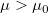
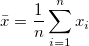
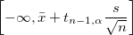

Algorithmen (t-Test bei einer Stichprobe)
tTest-OneSample-Algorithm
Ein t-Test bei einer Stichprobe kann verwendet werden, um zu testen, ob der wirkliche Mittelwert einer Grundgesamtheit /math-d4af45ea35b4839bf0a40ebb0c7a4407.png "\mu\,\!") gleich einem festgelegten Testmittelwert
gleich einem festgelegten Testmittelwert /math-5ab7c597b4d8943eb3551df415047c1e.png "\mu_0\,\!") oder sich von ihm unterscheidet. Der Test kann entweder einseitig oder beidseitig sein, und die Hypothesen haben die Form:
oder sich von ihm unterscheidet. Der Test kann entweder einseitig oder beidseitig sein, und die Hypothesen haben die Form:
/math-e65765bedcabe42c66ec93228769e82a.png "H_0") : vs.
: vs. /math-6207a80403dcccc1aa3b5b7303315c4b.png "H_1") :
:/math-f5d01355034cb1abf5d128b393ddebff.png "\mu \ne \mu_0") , beidseitiger Test
, beidseitiger Test
: vs. :, oberer Test
:/math-d8c59401e54095893dbf55a817ee57c2.png "\mu \ge \mu_0") vs. :
vs. :/math-067938f8db0864ed2e506bec3acd6e85.png "\mu < \mu_0") , unterer Test
, unterer Test
Teststatistik
Angenommen /math-888d89edfa615618d98b9d9dc1f12026.png "X(x_1,x_2,...,x_n)\,\!") ist der Eingabedatensatz, dann hat der statistische t-Wert eine studentisierte t-Verteilung mit (n-1) Freiheitsgraden, berechnet als:
ist der Eingabedatensatz, dann hat der statistische t-Wert eine studentisierte t-Verteilung mit (n-1) Freiheitsgraden, berechnet als:
/math-d18e7f1610875a541d3b0fa8d770cef1.png "t=\frac{\bar{x}-\mu}{s/\sqrt{n}}")
Wobei  und
Bei einem gegebenen Signifikanzniveau /math-06f7895cd704b1cb0921cf98aec71926.png "\alpha\,\!") wird die Nullhypothese
wird die Nullhypothese /math-806277203dedea2ed8321f6cbd465a54.png "H_0\,\!") zurückgewiesen, wenn:
zurückgewiesen, wenn:
, für beidseitigen Test
, für oberen Test
/math-5ada703667ed6b0bac90e7e882e7eac5.png "t<-t_{\alpha}\,\!") , für unteren Test
, für unteren Test
wobei der kritische Wert aus der t-Verteilung ist, indiziert auf Ebene um /math-cee44a4736519848cd908612350c85fe.png "(n-1)") Freiheitsgrade. Als eine bessere Methode, die Wahrscheinlichkeit der Hypothese auszudrücken, wird auch der p-Wert betrachtet. Sie können die Nullhypothese verwerfen, wenn . Der p-Wert für die t-Statistik ist mit der unvollständigen Beta-Funktion verbunden.
Freiheitsgrade. Als eine bessere Methode, die Wahrscheinlichkeit der Hypothese auszudrücken, wird auch der p-Wert betrachtet. Sie können die Nullhypothese verwerfen, wenn . Der p-Wert für die t-Statistik ist mit der unvollständigen Beta-Funktion verbunden.
wobei
Konfidenzintervalle
Für das festgelegte Signifikanzniveau ist das Konfidenzintervall für den Stichprobenmittelwert:
| Nullhypothese |
Konfidenzintervall |
/math-0e07ec7acebf87e9f0a3393a7d4b1494.png "H_0:\mu=\mu_0\,\!") |
|
/math-cef745c83d012633dc3ec4cab2bddf05.png "H_0:\mu \le \mu_0") |
![\left[\bar{x}-t_{n-1,\alpha}\frac{s}{\sqrt{n}}, \infty\right]](../images/Algorithm_(OneSampletTest)/math-052bc488001c8ec3a15a2607c0bd4c12.png "\left[\bar{x}-t_{n-1,\alpha}\frac{s}{\sqrt{n}}, \infty\right]") |
/math-72f86998b84d9769989044e8a2258378.png "H_0:\mu \ge \mu_0") |
 |
Analyse der Trennschärfe
Die Trennschärfe eines t-Tests bei einer Stichprobe ist ein Maß für seine Fehlererkennbarkeit. Drückt man dies mit den Begriffen der Null- und Alternativhypothese aus, so ist die Trennschärfe die Wahrscheinlichkeit dafür, dass die Teststatistik T stark genug ist, um die Nullhypothese zu verwerfen, wenn sie tatsächlich verworfen werden sollte (d.h., wenn die gegebene Nullhypothese nicht wahr ist). Für jede der drei verschiedenen Nullhypothesen ist die Trennschärfe unten mathematisch definiert:
| Nullhypothese |
Trennschärfe |
/math-0c10119befd073cec6a27f07496f89b1.png "H_0:\mu=\mu_0") |
|
|
|
|
|
wobei T eine zufällige Variable einschließlich einer t-Verteilung mit Freiheitsgraden ist. Die Berechnung für die hypothetische Trennschärfe ist die gleiche wie für die tatsächliche Trennschärfe, außer dass die Teststatistik t , der kritische Wert und der Freiheitsgrad werden erneut berechnet mit Hilfe der hypothetischen Stichprobenumfänge anstatt des tatsächlichen Stichprobenumfangs.